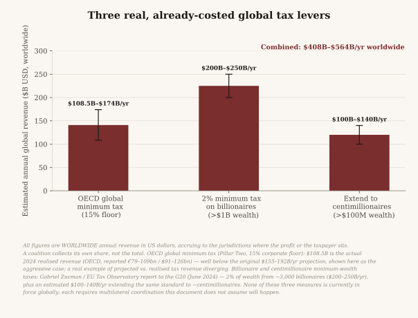
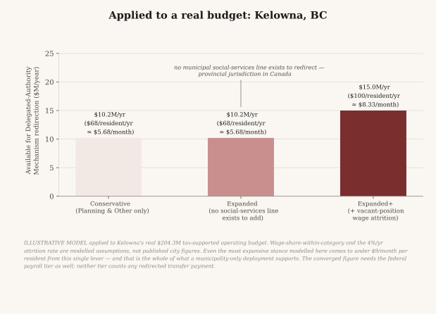

Implementation and cost
What a deployment costs to run, what it controls, and what the dividend amounts to at each stage of adoption — from an online network to full discretionary authority at municipal and federal level.
What this document is
This is a costing model built on published budget figures. Every input is cited and every calculation is shown, so that a reader can check the arithmetic rather than accept the conclusion.
It is a model, not a forecast. It assumes adoption that has not happened, at a pace no government has agreed to, under a legal transfer of authority that has not been drafted. Its purpose is to answer a specific question honestly: if Triarchal Democracy were fully adopted, what would the dividend actually be, and what would running it cost?
The short answer is that a fully adopted deployment supports somewhere between $17.42 and $23.61 per resident per month — $21.24 to $28.79 for each entitled adult, since membership, and with it entitlement, begins at eighteen. The spread is the substitutable-payroll band, derived below: $23.61 assumes 10% of federal payroll is substitutable, $17.42 uses the 5.95% that the only published occupational comparison supports. Almost all of either figure arrives slowly, and only if each government chooses to release each vacated line, which the rules say may never be presented as more than an upper bound.
What this model does not count
This model does not count redirected government transfers. No pension, no children's benefit, no income assistance — and not the administrative saving that would only exist if a deployment took over eligibility determination.
None of those programmes is part of this plan. The founding documents keep every programme resting on a disability, need or means determination outside the adoption mechanism by default — disability support, income assistance, pensions and child benefits are not touched, and nothing on this page assumes they will be. Members could vote to bring one into scope by ordinary proposal, most plausibly once the dividend had grown enough to make the trade worth weighing, though the rules set no size test. Everyone already receiving the programme would keep it, from the government, on the programme's own terms, and only the highest threshold in the founding documents could ever reduce what they receive. The cost would fall on people who come to need it later: redirection works by closing a programme to new applicants, so someone who would have qualified afterwards receives the dividend instead. That is a decision for a community to make in the open, with that cost in view, not one a projection should make for it. What the adoption rules permit by default is the redirection of an ordinary subsidy a government controls, with every existing recipient protected indefinitely. This model therefore counts none of it — the figures below are what the rules produce without touching any assistance programme.
What this model counts instead is money a government has delegated authority over — its own discretionary budget and its own vacant posts — rather than money it pays to a person. That is a much smaller number. It is also the honest one, and the rules matter more than the figure: if the system governs well, the treasury grows, and the dividend grows with it.
Sources
| Input | Figure | Source |
|---|---|---|
| Federal personnel expenditure, 2024-25 | $76.3B over 448,000 FTE ($170,312 each) | Parliamentary Budget Officer, Personnel Expenditure Analysis, 2024-25 |
| Federal public service headcount (all of it) | 357,965 (2025); −2.7% year over year, then 345,282 (2026), a further −3.5%. The 2025 reduction was achieved primarily through natural attrition; the 2026 reduction was not — see below | Treasury Board Secretariat; CBC, June 2026 |
| Kelowna tax-supported operating budget | $204.3M of a $908M total | City of Kelowna, Council-approved 2025 Final Budget |
| Populations used | Canada 41.6M; Kelowna ~150,000 | TBS (implied); City of Kelowna |
| Population under 18 | Aged 0–14: 15.0% of 41,651,653; with ages 15–17, roughly 18% | Statistics Canada, population estimates, 1 July 2025 |
Execution costs in the next section are estimates, not published figures, and are marked as such. Everything else is arithmetic on the table above.
What it costs to run
Platform compute is not the cost. A deployment runs on serverless infrastructure where the marginal cost of an additional resident is negligible. The real costs are people, premises, identity verification, and audit.
Estimated annual operating cost for a municipality of 150,000 residents:
| Stage | Staff | Premises | Verification | Audit | Total | Per resident |
|---|---|---|---|---|---|---|
| Stage 1 — shadow deployment | 3 FTE | 1 site | $0.05M | $45k | $0.50M | $3.33/yr |
| Stage 3 — bounded delegated authority | 6 FTE | 2 sites | $0.05M | $120k | $0.98M | $6.53/yr |
| Stage 4 — full discretionary authority | 12 FTE | 4 sites | $0.05M | $120k | $1.79M | $11.93/yr |
Assumptions: $95,000 fully loaded per FTE; $120,000 per staffed access point per year; $0.35 per resident for one-time identity verification, amortised annually, which is $0.05M a year at 150,000 residents; external audit rising with the scale of funds administered.
Set against what Stage 4 controls at municipal level — $15.0M in redirectable discretionary budget, derived below — an operating cost of $1.79M is 11.9% of the funds administered. That is far worse than the ~1% typical of a mature universal programme, and the page should say so plainly rather than bury it. The reason is that the base is small, not that the model is expensive per resident — the same $1.79M is 1% of a $179M base. A deployment at municipal scale alone does not come close to that benchmark, and should publish the ratio every cycle rather than describing itself as low-cost.
What each stage controls
Stage 0 — Network. No public money. The treasury is member contributions and grants. Nothing is distributed at this stage: both tiers stay gated until thirty verified Members and every defined Delegate Position filled, and the point of the stage is to demonstrate the mechanism rather than the amount.
Stage 1 — Shadow deployment. Cost without revenue. The deployment mirrors a real government's decisions with no binding force, producing an evidentiary record. Cost: approximately $0.50M per year for a city of 150,000. Dividend contribution: nil.
Stage 2 — Advisory recognition. A government formally receives the deployment's output. No authority transfers, so no budget does either.
Stage 3 — Bounded delegated authority. One budget line, ratified by the elected body before it binds.
Stage 4 — Full discretionary authority. The discretionary portion of a budget — what remains after debt service, pension obligations, statutory spending, and standing contracts.
Municipal
Kelowna's $908M total budget is not the relevant figure; $204.3M is, since the remainder is rate-funded utilities, committed capital, and grant-tied programmes. Within the tax-supported operating budget, Planning & Other is $10.2M. Adding wage budgets released by attrition on vacant posts brings the modelled ceiling to $15.0M.
The $4.8M step is modelled, not published. It assumes a 4% annual attrition rate and a wage share within each budget category, neither of which the City publishes. It is the single largest assumption in the municipal component — 32% of it — and unlike the federal payroll component below it is credited at full value from year one rather than ramped. Treat the municipal figure as $10.2M published plus $4.8M assumed, not as $15.0M observed.
$15.0M ÷ 150,000 residents = $100/resident/year = $8.33/month.
That is before the cost of running it. Stage 4 overhead is $1.79M a year, so $15.0M administered leaves $13.21M to distribute: $88/resident/year, or $7.34 a month. The figures on this page are gross, which is the convention in published budget documents, but it is worth stating plainly rather than leaving a reader to work it out.
And someone has to fund that $1.79M. It cannot come out of the dividend pool without reducing the dividend, and the rules bar institutional money — including the Triarc's own — from reaching the pool at all. So either the adopting government funds operations on top of the delegated budget, making its real outlay $16.79M, or the deployment raises $1.79M a year in donations and grants for a city of 150,000. This model does not resolve which, and no deployment should assume the first.
Kelowna's own budget carries no social-services line at all — in Canada that function is provincial, not municipal. It is noted here because it is a useful fact about municipal budgets, not because this model has designs on the provincial one.
Federal
The federal contribution to this model is payroll only. No federal transfer to a person — elderly benefits, children's benefits, Employment Insurance — is counted, for the reason given at the top of this page.
The adoption rules permit redirection of staffing budgets for vacant roles and open budget lines only. A filled role enters scope only through the incumbent's own retirement or resignation, never as a direct consequence of adoption, and never through workforce adjustment, layoff, or the expiry of a term or casual contract. This model respects that rule, which means payroll is modelled on attrition alone.
Entering scope is not the same as being released. 7.6 makes a vacated budget line eligible for redirection; each release is a decision the adopting government takes, and may decline to take, in the cycle it arises. A government that refills its vacancies releases nothing. The table below assumes uninterrupted full uptake for twenty-five years with no post ever refilled, which is an upper bound rather than a projection.
And the usable rate is lower than the headline. Treasury Board's “natural attrition” includes term and casual contracts expiring, which 7.5 excludes by name. The share of the −2.7% that was retirement or resignation is not published, so the rate applied below is an overstatement of what a deployment could actually claim, by an unknown amount.
The federal public service as a whole reduced by 2.7% between 2024 and 2025 — the core public administration by 1.0%, separate agencies by 8.2%. Treasury Board's own wording is that the savings were expected to be achieved primarily through natural attrition “to the extent possible” — a forward-looking commitment rather than a retrospective finding, and its “natural attrition” includes term and casual contracts expiring, which is not the incumbent's own retirement or resignation that the adoption rules require. Applying that rate to the $76.3B personnel base:
Two caveats belong with that rate before the table, not after it. First, the rate and the base measure different populations, and the rate is itself a blend. −2.7% is the whole federal public service of 357,965 — not the core, which is 279,396 and fell by only 1.0%. Separate agencies fell 8.2%, and about 72% of the entire headcount drop came from them. The $76.3B over 448,000 FTE is a third population again, including the RCMP and the Canadian Armed Forces. Applying the one to the other assumes they shed staff at the same pace, which is not established and is unlikely while defence and policing are under expansion commitments. Second, a single year's rate is compounded here for twenty-five years, implying a roughly halved personnel envelope — an extrapolation, not a projection.
And the rate has stopped being attrition. Headcount fell a further 3.5% to 345,282 in 2026, but Budget 2025 commits to cutting 28,000 more positions by 2029, only some of them through attrition and early retirement, with layoff notices issued from December 2025. The adoption rules permit redirection only where a role empties by the incumbent's own choice. A deployment cannot count a position cut by workforce adjustment as released payroll, so the headline reduction figures from 2026 onward overstate what this model is entitled to claim. The 2.7% used below is the last year for which the reduction was primarily voluntary.
| Year | Cumulative payroll released | As % of payroll |
|---|---|---|
| 1 | $2.1B | 2.7% |
| 5 | $9.8B | 12.8% |
| 10 | $18.3B | 23.9% |
| 15 | $25.7B | 33.7% |
Released payroll is not the same as redirectable payroll. Most federal personnel deliver functions that citizen participation does not replace: border services, tax administration, food inspection, corrections, defence, scientific research. What participation plausibly does replace is a narrow band: consultation and engagement, policy analysis and advice, and the committee and deliberative apparatus around a decision. It explicitly does not include eligibility determination or benefits administration. The model is barred from both: a deployment may never levy, administer or determine eligibility, and the Triarc never builds an eligibility test. Existing government finance staff keep executing payments, compliance and reporting regardless.
There is a published anchor for the size of that band. Canada's EC group — Economics and Social Science Services, the policy-analysis and socio-economic research classification — numbered 26,649 at 31 March 2025. Measured against the same population this page's money covers — the 448,000 FTE the PBO's $76.3B pays for — that is 5.95%.
So the band used here is above its own anchor, and that is the honest way to read it. Ten per cent is roughly 44,800 FTE-equivalents: about 1.7 times the entire EC group. The figure is an upper bound, not a conservative one, and the earlier wording calling it conservative was wrong.
Three limits on the anchor, stated rather than buried. EC work is not wholly substitutable by deliberation — economic forecasting and statistical method are not a community vote, and deliberative bodies generally consume staff analysis rather than replace it. EC is also not the policy-advice group outright: Treasury Board's definition covers economics, sociology and statistics and excludes "the planning, development, delivery or management of policies, programs, services", which sits in the PM and AS groups. So EC is over-inclusive in one direction (statisticians, archivists, legislative editors) and under-inclusive in the other, and does not bound the band from either side. Third, the adoption rules bring any vacated wage line into scope, not an EC-shaped subset, so nothing mechanically keeps other vacated posts out of the pool. The anchor is the only like-for-like comparison available, and it sits below the band rather than supporting it.
What that does to the headline. At the anchor's 5.95% the federal component is $9.09 rather than $15.28, and the converged total is $17.42 per resident per month — $21.24 per entitled adult, $255 a year. The $23.61 and $28.79 this page carries are the 10% figures, and should be read as the top of a range whose bottom is $17.42. Both ends move together if the band is ever measured rather than assumed.
Modelling that substitutable band at 10% of payroll gives $1.83B released by year 10, or $3.66 per resident per month. At a more aggressive 25%, it is $4.57B, or $9.15 per month.
The federal component is not costed. The operating-cost table above prices a municipality of 150,000 and nothing else. A federal-scale deployment would carry its own overhead, and at the same $11.93 per resident per year across 41.6 million residents that is roughly $496M against $7.63B released — about 6.5%, netting the federal component to about $14.29 rather than $15.28.
Payroll is a slow contributor rather than a small one. Even after fifteen years of attrition it supplies under $10 per resident per month — but at full attrition it is $15.28, the larger of this model's two components. The whole figure is modest because the model counts only delegated authority, not because this part of it is negligible.
Anyone reading this as a plan to shrink the public service has it backwards. The adoption rules count a post only once the incumbent has left of their own accord. Nothing here is produced by cutting anyone, and a deployment that tried would be outside the rule it claims to follow.
But there is a trade here and it should be named. At full attrition the whole band is permanently unstaffed and not refilled, its work carried by citizen deliberation instead. That is a real bet: that deliberation can do what those posts did, and that nothing is lost when they go. And the same released money could have reduced the deficit or funded something else — directing it to a dividend is a choice with a cost, not a free saving. Neither of those is a reason not to do it. They are the reasons it is a decision rather than an optimisation.
The dividend, by adoption stage
These are the adoption stages — how far a government has gone. They are not the platform-maturity stages, which the proposition page uses and which number separately. The deployed platform is at platform Stage 1 regardless of adoption stage.
Two components, and only one of them moves. The municipal share is a delegated discretionary budget, available once the delegating government's own elected body has ratified it and the agreement explicitly designates the funds. The federal share is payroll released by ordinary attrition at a 10% substitutable share, which is why the line climbs slowly rather than arriving.
| Year | Municipal | Federal payroll | Total/month |
|---|---|---|---|
| 1 | $8.33 | $0.41 | $8.74 |
| 3 | $8.33 | $1.20 | $9.53 |
| 5 | $8.33 | $1.95 | $10.28 |
| 10 | $8.33 | $3.66 | $11.99 |
| 15 | $8.33 | $5.15 | $13.48 |
| 20 | $8.33 | $6.44 | $14.77 |
| 25 | $8.33 | $7.57 | $15.90 |
Converged ceiling: $23.61 per resident per month, or $283 per year — the size of the pool, measured across the whole population. What an entitled Member receives is that pool shared among people aged eighteen or older only; see “From the pool to what a Member receives” below.
Year 25 totals $15.90, not $23.61, and the whole gap is the payroll column. The table applies 2.7% attrition compounded for twenty-five years, which has not yet emptied every substitutable post; convergence is the point where it has. The substitutable band is 10% of the $76.3B personnel base — $7.63B a year, or $15.28 per resident per month at full attrition, against $7.57 at year 25.
$8.33 municipal + $15.28 federal payroll = $23.61. Both components are derived above, and there is nothing else in the sum.
These two components apply to different populations and are additive only for a resident inside both tiers — a Canadian resident in a municipality that has adopted, under a federal government that has also adopted. A resident whose city has adopted and whose federal government has not receives the municipal component alone: $8.33 per resident per month, $10.16 per entitled adult, which is the mature-municipal ceiling at Stage 4 rather than what a first deployment controls — delegated authority starts at a bounded domain, so a Stage 3 deployment plans for a single budget line, not the whole discretionary envelope — and should actually plan for.
From the pool to what a Member receives
The converged figure divides the pool across the whole population. Membership, and with it entitlement, begins at eighteen, so the same pool is shared among people aged eighteen or older only. “Adult” on this page means a person aged 18 or older.
Statistics Canada put the population aged 0–14 at 15.0% of 41,651,653 on 1 July 2025; adding the 15–17 band brings the under-18 share to roughly 18%. Sharing the pool among the remaining 82% gives a converged dividend pool of $28.79 per adult per month, or $345 per year. That is the pool as a whole; how it divides between the two tiers is a community decision; this page uses the default half, which Members can change by ordinary proposal.
These are two different fractions and it is worth separating them. Take a pool of $100 shared by 100 people: $1 each. Remove 18 people and the same $100 is shared by 82: $1.22 each. The share removed is 18% of the population; the increase to everyone remaining is 18 ÷ 82 = 22%. The pool never changes — only the number of ways it divides.
The multiplier is 1 ÷ (adult share). At an 18% under-18 share that is 1 ÷ 0.82 = 1.22. Move the assumption and the whole line moves with it: a 17% share gives $28.45 a month, 19% gives $29.15, 20% gives $29.51. The figures in this section use 18%, and the assumption is stated rather than buried because it drives every number that follows.
The per-resident figure measures the money available; the per-adult figure is the average the pool can pay each entitled adult. What any one Member receives depends on contribution (see How the pool divides). Both appear in this document and they are not interchangeable.
What the converged figure means
$28.79 a month is the average the pool can pay per entitled adult, not an income and not a per-Member ceiling. The per-Member ceiling is five times an equal share, and at the default half-share split at least $14.40 of the average reaches every Member equally, and more when fewer than one Member in nine contributes, because what the ceiling holds back is paid out equally the next month; the rest divides by claimed Marks. It is far below every serious basic-income proposal and far below the poverty line in any Canadian jurisdiction. It is not a replacement for employment, for a pension, or for social assistance, and it does not claim to be. Anyone who needs those still needs those.
It is also the honest number. It is what a community can distribute from budgets it has actually been given authority over, divided among every entitled adult, half of it equally and half by contribution, rather than paid only to those who qualify on need. No assumption makes the figure larger: pension and benefit programmes sit outside the mechanism unless a community votes to bring one in, and this page does not assume any community will. The figure is small because it counts only budgets a government has actually handed over. A model asserting both universality and a generous individual amount, funded from existing budgets, has either not done the division or has quietly spent someone else's entitlement.
Two things could raise it, and neither should be assumed:
- Growth in the value a community produces. The model's central claim is that better governance generates value currently going unrealised. That value is real and is not quantifiable in advance, so it appears nowhere in this model.
- Multi-government revenue pooling. Three already-costed levers exist — the OECD global minimum tax and proposed minimum taxes on billionaire and centimillionaire wealth — jointly estimated at USD $408.5–563.5B a year worldwide. The top of that range is soft in a specific way: the OECD component runs $108.5B to $174B, where $108.5B is revenue actually realised in 2024 and $174B is the midpoint of an earlier projection that realised revenue came in well below. A floor drawn from observation and a ceiling drawn from a superseded forecast are not two ends of one measurement. This model does not convert that into a per-person amount. The revenue accrues to the jurisdictions where the profit or the taxpayer sits, so a coalition captures its own share and not the global total. A coalition of 100–190 million people is one to two per cent of the world's population and would capture single-digit percentages of these sums — an order of magnitude below what dividing the world total by a coalition's population implies. The correct figure is a coalition-share calculation this model has not done, and none of these measures is in force globally; each requires multilateral coordination this document does not assume will happen. The lever is real; its size here is unquantified.

And what it is not: a reason to wind down anyone's benefits. Nothing here depends on a pension, a child benefit or an income-assistance programme being reduced.
It does depend on municipal services changing. The $10.2M is Kelowna's Planning & Other services line and the $4.8M is wage budget on posts attrition empties. Taking all of it as cash means that work stops being done. $8.33 is a ceiling reached only if a community votes to take the whole discretionary line as a dividend rather than as services, and that trade is the community's to make, not this page's to assume. The adoption rules also require discretionary allocation to carry an equity weighting, which a flat per-capita payment cannot carry — another reason a real deployment is unlikely to take all of it as cash.
How the pool divides
Every Member's return has two parts. The Foundation Dividend is the same for everyone: by default, half of each month's new money, divided equally, plus anything held back the month before. The Civic Dividend is the other half, divided according to the contribution each Member has recorded and claimed that month. The more a Member contributes, the larger their share, until their total from both parts reaches five times an equal share of the month's new money. Whatever that ceiling holds back is added to the next month's Foundation Dividend, so it reaches every Member rather than piling up. Neither part shrinks because a Member's income or circumstances improve.
What contribution earns depends on how many others contribute, and real participation is likely to be low: Paris’s participatory budget, one of the largest anywhere, drew about 7% of residents at its 2016 peak (APUR), voting once a year, while this asks for a claimed contribution every month. So the table starts there. Monthly amounts at full adoption, at both ends of the pool ($21.24 and $28.79 per adult), with every adult a Member:
| How many contribute | A Member who does not contribute | A Member who contributes |
|---|---|---|
| One in twenty (the realistic case) | $16.77 – $22.73 | $106.20 – $143.95 (the ceiling) |
| One in five | $10.62 – $14.40 | $63.72 – $86.37 |
| Half | $10.62 – $14.40 | $31.86 – $43.19 |
| Everyone, equally | — | $21.24 – $28.79 |
The ceiling is the most any one Member can receive: $1,274 to $1,727 a year, and only when few others contribute. It is the upper end of an upper bound — full federal and municipal adoption, the 10% payroll case, decades of attrition and every adult a Member. Where only a city has adopted, the pool is $10.16 per adult: a Member who does not contribute receives $5.08, rising to about $8.02 at one contributor in twenty and towards $10.16 as participation falls further, and the ceiling is $50.80 a month.
What the table assumes. The one-in-twenty figures are where the months settle: in the first month a Member who does not contribute receives the plain half share, $10.62 to $14.40, and the share rises as held-back money starts flowing back. Contributors here are equally active; a real Member's share is their own claimed contribution divided by everyone's. The pool is the same size whoever contributes, so a contributor's larger share is money others did not claim, not new money. Every adult being a Member is an assumption with a direction: membership is opt-in and the delegated budget is fixed, so the fewer who join, the more each Member receives, paid from what non-members would otherwise have shared. None of these figures is reached early: nothing is paid until the community has thirty verified Members and every Delegate Position filled, and full adoption takes decades of attrition to arrive. Even the ceiling is not an income, and not a reason to leave a job or a benefit.
Before tax, and before other programmes react. These are amounts paid, not amounts kept. Whether the dividend is taxable, and whether income-tested programmes such as the Guaranteed Income Supplement or provincial disability and income assistance count it as income, is not settled, and the answer may differ between the two parts. “Neither part shrinks” is a promise about what the community pays; what reaches a person depends on rules this model does not control.
What contribution earns besides money. Contribution builds civic standing, measured over the past twelve months. Standing makes a Member eligible to serve as a Steward and shows others who is worth handing a vote to. A Steward who earns enough delegated support in a sector can be recognised as a Delegate. Delegates are paid for that work from the community's operating budget, at a rate the community sets in public, separately from the dividend; that pay is not modelled here. Contribution never buys a heavier vote: every binding decision is one person, one vote.
Where this model could be wrong
Every year of payroll release assumes the government chooses to release it. A vacated post only becomes eligible for release; nothing is released until the government decides to let it go. Twenty-five years of uninterrupted full uptake with no post refilled is the most favourable path available, not the expected one.
The 10% substitutable-payroll share is an assumption. No published analysis decomposes the federal payroll by susceptibility to participatory substitution. The figure is offered as an upper bound and should be replaced with real function-level analysis before any deployment relies on it.
Execution costs are estimates. The staffing, premises and audit figures are not drawn from an operating deployment, because none exists at these stages. They will be wrong in both directions and should be replaced with measured costs as soon as a real deployment produces them.
The attrition rate is measured on a different population than the base it is applied to, and is compounded for twenty-five years. −2.7% is the whole federal public service, where the core fell only 1.0% and separate agencies 8.2%; the $76.3B envelope is a different population again, including the RCMP and the Armed Forces. One year's rate extrapolated for a quarter-century implies a roughly halved personnel envelope. Both are assumptions, and from 2026 the headline reduction is no longer attrition alone.
The Stage 4 base is narrower than the stage definition. Stage 4 is defined as the discretionary portion of a budget — what is left after debt service, pensions, statutory spending and standing contracts. The derivation then uses only the Planning & Other slice, 5% of the tax-supported budget. Transportation (22%) and Healthy Communities (21%) are not obviously statutory and are not excluded by the stated rule. The narrower base makes the figure smaller, which is the safe direction, but it is a choice rather than a derivation.
About 6% of the federal personnel base is not a redirectable wage budget. PBO's $76.3B includes roughly $2.4B of consolidated Crown corporations and $2.5B of accrual and other adjustments. The 10% band is applied to the whole envelope, which overstates it by roughly $0.49B, or about $0.98 a month.
The municipal ceiling is $10.2M published plus $4.8M modelled. The modelled part assumes a 4% attrition rate and a wage share within budget categories, neither published by the City, and it is credited at full value from year one while the federal equivalent ramps over twenty-five years. That inconsistency is not resolved here.
Almost all of this rests on two numbers. One city's discretionary budget and one year's federal attrition rate carry the entire figure. Neither is representative by construction: Kelowna is one mid-sized B.C. city, and the attrition rate is a single observation. A deployment elsewhere should rebuild both from its own published budgets rather than scaling these, and should expect a different answer.
The political pathway is not costed at all. This model prices operation and distribution. It does not price the legislative change, legal review, or electoral consent that every stage after Stage 2 requires, and those are the binding constraints rather than the arithmetic.

The share can be changed
$28.79 a month is where the arithmetic lands on today's published budgets, counting only money a government has delegated authority over. It is not fixed.
It rises with the pool on its own. Both tiers are recalculated every cycle from what the treasury can sustain. The treasury grows by taking in donations, grants and revenue the community votes to pursue, and by budget a government has explicitly designated into the pool. The rules are explicit that inflows are not a measure of what a community produces, and no clause pools revenue across governments.
And the rules that set it can be amended. Any Member may propose changing the pool share, how the pool divides, or pursuing new revenue for it, through the same procedure every other decision uses: the share is a default any ordinary proposal can change. The formula itself is not — no proposal at any threshold may set the Foundation Dividend to an amount other than what the formula computes, and the formula is entrenched: changing it takes three quarters of the vote with 40% participation. Members may also argue publicly for measures a legislature could enact, which is not the exercise of any taxing power and never becomes one.
What this document will not do is assume the outcome of a vote that has not been held. Every figure on this page is drawn from published budgets as they stand today. A proposal that changes the revenue base changes these numbers, and the arithmetic should be redone when it passes, not before.